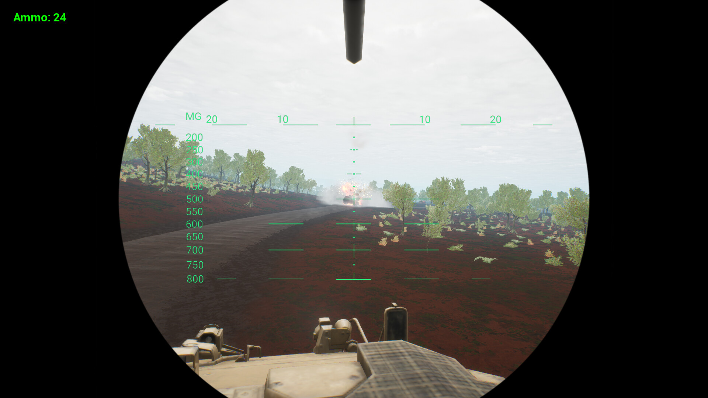
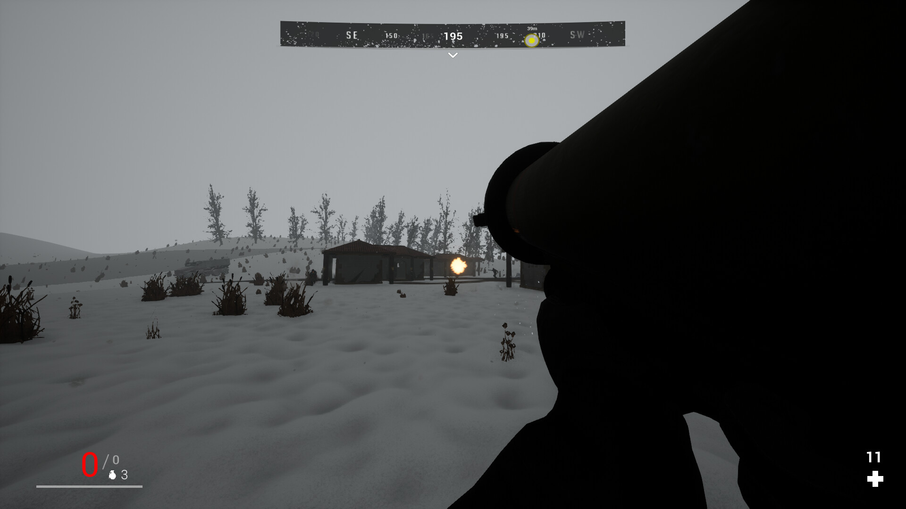
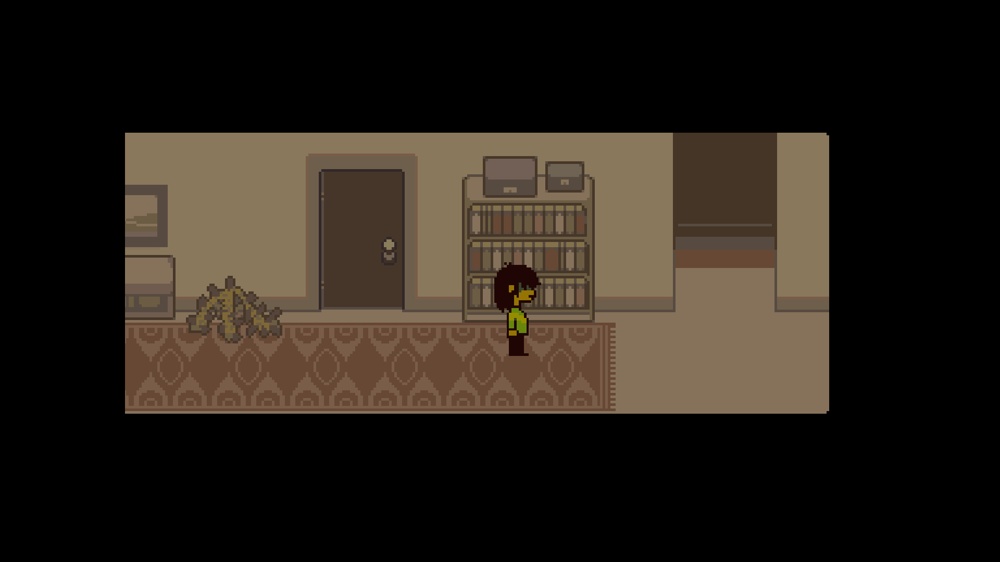
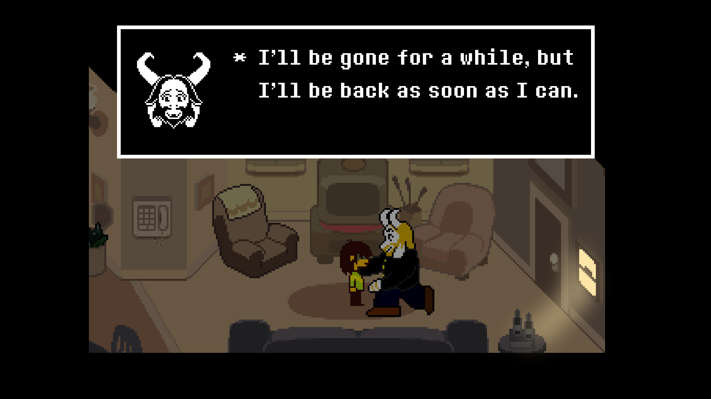

Projects
Hazardous Island
2022 – 2024



Hazardous Island is a first-person shooter, open-world game developed in Unreal Engine. The project focuses on exploration, resource management and environmental storytelling. During development I worked on gameplay systems, level scripting, interaction mechanics, story and basically everything.
Main Features
- First-person gameplay
- Unique story
- Bosses
- Interactive environment
- Blueprint
Technologies
Unreal Engine 4
Adobe Photoshop
Nvidia Omniverse
Quixel Bridge
Blueprints
Deltarune: Unstable Connection
2025 (Concept)



A personal Unreal Engine concept inspired by Deltarune. Experimental Project Created an interactive 2D game prototype entirely inside Unreal Widget Blueprint (UMG) as an engineering workaround for sprite rendering limitations. The goal of this prototype was not to recreate the original game, but to explore how its atmosphere, presentation and gameplay ideas could be interpreted inside Unreal Engine. This project was used to experiment with gameplay systems, UI, Blueprint architecture and Unreal Engine workflow.
Focus
- Gameplay prototyping
- Blueprint experimentation
- UI concepts
- Level design exploration
Technologies
Unreal Engine 5
Adobe Photoshop
PaintTool SAI Ver.2
Blueprints